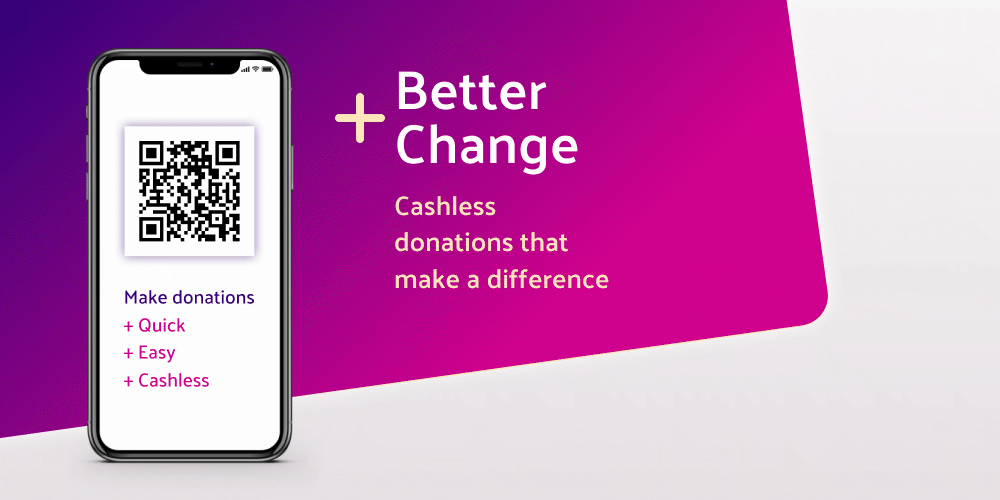

Better Change
An eight-day group project practicing agile methodologies. A web app that enables charity fundraisers to receive cashless and cardless donations.- View live demo
- View Github Repo
- Features: generating QR codes, sign-up and log-in with passport and stored in SQL database, payments with Stripe, navigation with React Router, AWS S3 storage, interactive data visualisation. I created the functionality for the S3 storage, QR Code, form validation and I designed the UI.
- Technologies: React, React Router, Redux, Node, Express, PostgreSQL, SCSS, Git.

PROFILE
Hi! My name is Roland. I am looking for a role as a Junior JavaScript Developer in which I can further my ability and passion for building robust and engaging web applications, and continue to develop and expand my skill set.
After 12 years of managing events and running digital & print design campaigns, I found myself increasingly drawn to web development. Recently I became curious about React, Node and other technologies so I decided to take a new direction and study on a 12-week JavaScript bootcamp at Constructor Labs.
In a short space of time I learnt and demonstrated complex and sophisticated concepts through solo and group projects. Now I want to continue on this exciting new path and put what I have learnt into practice as a junior developer so I can further my ability and passion for web development.
PROJECTS
OurBnB
A four-day group project practicing agile methodologies. A web app that enables people to find and book accommodation at various locations.- View live demo
- View Github Repo
- Features: dates-picker npm, search results fetched from SQL database and displayed as property details, Google map, image carousel npm, booking form, sign-up and log-in screens. I set up the React architecture, search functionality, date-picker, SCSS and I designed the UI
- Technologies: React, Node, Express, Handlebars, PostgreSQL, Grid, Flexbox, Git
Lovely Grubbly
A two-day solo project. A web app for ordering takeaway food for deliveries.- View live demo
- View Github Repo
- Features: filtering different courses, adding / removing orders from basket, viewing basket with costs, tooltip preview of items, make booking with name and number, confirmation follows by text using Twilio. I created the React architecture, created SQL tables, used SCSS and Flexbox to style the UI
- Technologies: React, Node, Handlebars, Express, PostgreSQL, SCSS, Flexbox, Git
Which City
A two-day solo project. To play the Which City? quiz game simply choose a country, browse the photos and try to guess which city it is.- View live demo
- View Github Repo
- Features: upon selecting a country, 10 relevant photos are fetched from the Unsplash photos API, relevence is determined by search term filtering in React, as photos are viewed lives are deducted, scoring is based on remaining lives x 10 and is displayed in the top scores table using localStorage
- Technologies: React, Node, Unsplash API, Classnames, BEM, Flexbox, Git
SKILLS

- Coding: Javascript, React, Redux, Node, Express, PostgreSQL, Postman, RESTful APIs, SCSS, BEM, Flexbox, Grid, Webpack, Jest / Enzyme, Git, Webpack
- Production: Responsive Web Design, Figma, Photoshop, Indesign, Illustrator
- Other skills: Pair programming, Agile methodologies, Management, volunteer as a meditation teacher